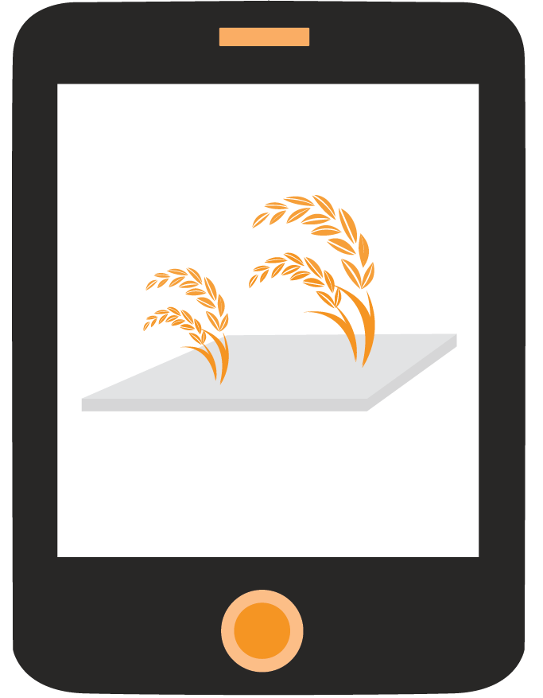
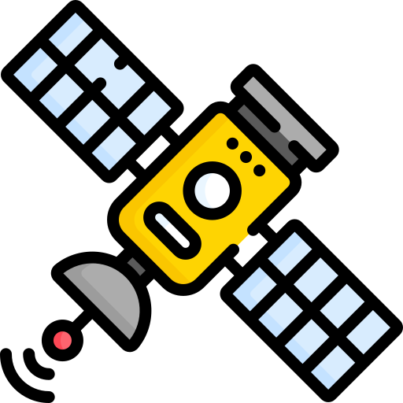

HERRAMIENTAS
El equipo desarrolla constantemente herramientas Y plataformas de agricultura digital. Para saber más sobre cada UNO desliza hacia abajo.
Herramienta
CLUSTERING DE PATRONES CLIMÁTICOS
Análisis y agrupación de series de tiempo climáticas multivariadas para cultivos de ciclo corto, utilizando la distiancia dtw.

Herramienta
SELECCIÓN DE FUNCIONES PARA MODELOS DE APRENDIZAJE
Un ejemplo de maíz, en la localidad de Chiapas.

Herramienta
GEE-WEATHER
Consulta y descarga de datos meteorológicos medidos via sensoramiento remoto, mediante consultas a las misiones disponibles en Google Earth Engine (GEE).

Herramienta
INDICADORES CLIMÁTICOS
Generar indicadores climáticos para eventos de cosecha.
Herramienta
PROPIEDADES INFERIDAS DEL RASTA
Este script permite el cálculo de las propiedades inferidas del rasta.

Herramienta
GEENSATELLITE APP
Platform crop satellite based monitoring, This project was generated with Angular CLI version 9.1.7.
Plataforma
SENSORES BOVINOS
Manual para el manejo de datos de sensores de movimiento y de temperatura timpánica en bovinos.

Plataforma
TALLER MINERÍA DE DATOS AGRICULTURA LIMA 2019
Conceptos básicos de agricultura, introducción a R y análisis exploratorio Y procesamientos de datos en agricultura.

Plataforma
PLATFORM FORMS
Forms to collect data about agronomy information.

Plataforma
MÉTODOS DE RERESIÓN AEPS
Métodos de análisis para datos multivariados en agricultura.
Plataforma
VERIFICACIÓN DE COORDENADAS
Revisión y depuración de coordenadas.

Plataforma
VINCULACIÓN ESTACIONES CLIMÁTICAS A UNIDADES DE MANEJO
Se pretende asociar series de datos climáticos a periodos de cosecha de cultivos que van desde siembra a recolección. La salida será un archivo .RDATA.